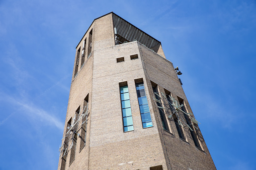

Poldertoren
De Poldertoren is een watertoren die in het centrum van Emmeloord staat. De toren werd gebouwd tussen 1957 en 1959. Met een hoogte van 65,30 meter is deze watertoren een van de hoogste watertorens van Nederland. De toren heeft een groot carillon. De toren, die geen dienst meer doet als watertoren, is sinds 2014 een rijksmonument.
De toren is gebouwd door Waterleiding Maatschappij Overijssel. De toren werd vervolgens eigendom van waterleidingbedrijf Vitens dat hem had overgenomen van de stichter. In 2005 is de toren aangekocht door de gemeente Noordoostpolder. In de toren werden onder andere het VVV-kantoor met ANWB-winkel, een kantoor en, ter hoogte van de klok, restaurant Sonoy met een Michelinster gevestigd. Omdat de gemeente echter het onderhoud niet meer kon financieren, is de toren in 2013 leeg komen te staan.